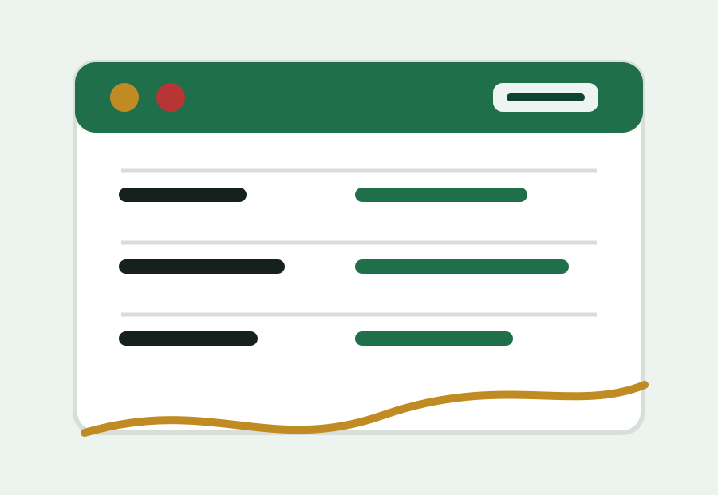

Croatia
Croatia World Cup 2026 prediction and travel impact
Croatia remains a useful prediction topic because recent tournaments trained fans to expect deep-run drama. That makes knockout route planning more relevant than simple group-stage travel.
Prediction angle
For Croatia, the travel story is late-stage flexibility. If the team advances again, small fan bases can still create sharp demand for official tickets, hotel rooms and multi-city flights.
Impact table
| Scenario | Demand impact | Fan move |
|---|---|---|
| Group-stage stability | Moderate route demand | Keep hotels flexible. |
| Knockout qualification | Late ticket searches rise | Use official channels. |
| Semifinal run | Final-week hotel demand rises | Use NY/NJ planning pages. |